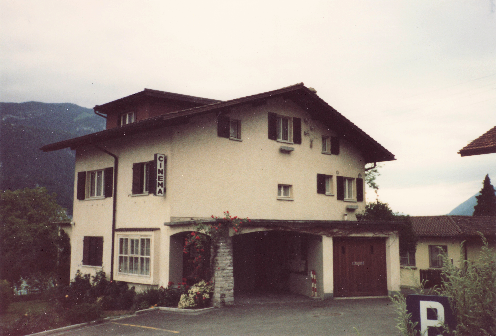
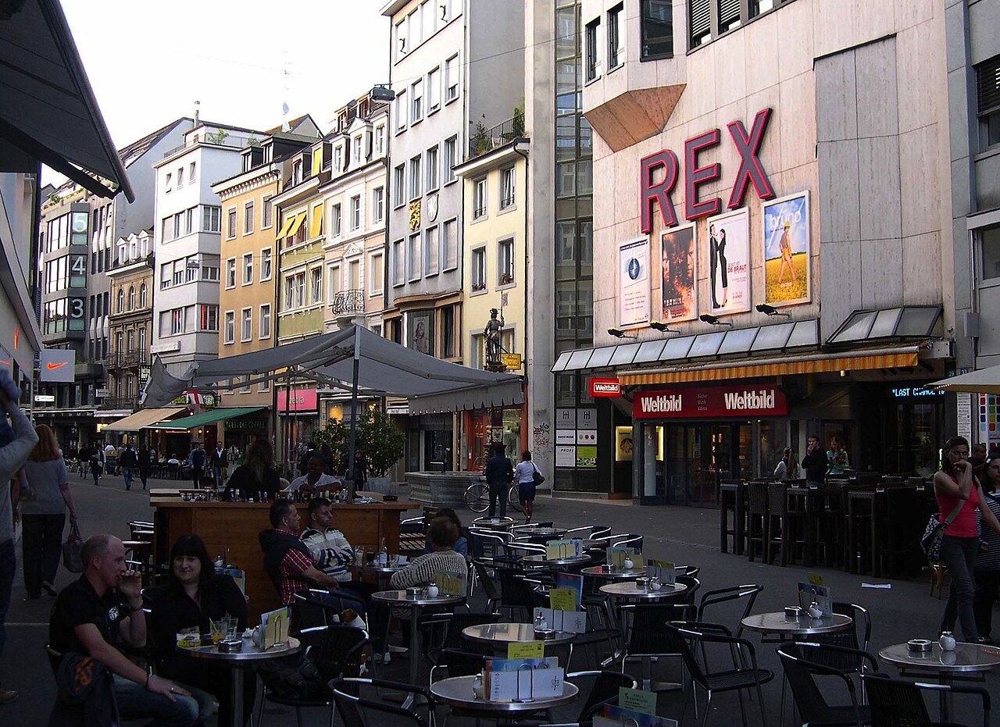
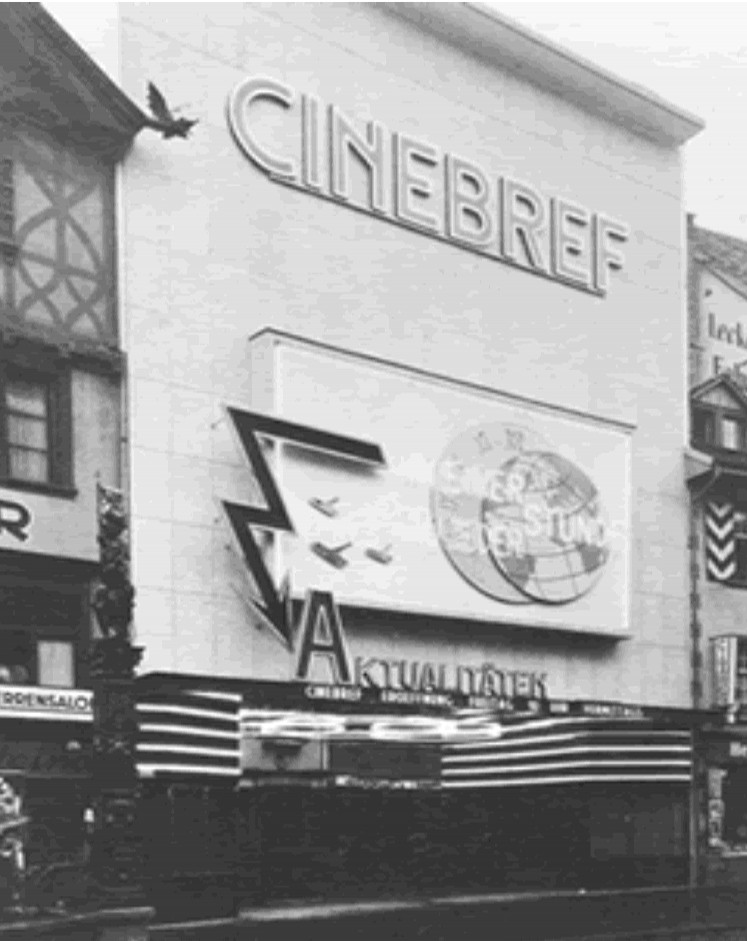

Bild
Andrin Gerber
Backend Developer
Dieses Datenjournalismus-Projekt analysiert den tiefgreifenden Wandel der Schweizer Kinolandschaft von den 1960er-Jahren bis in die Gegenwart. Anhand historischer und aktueller Daten machen wir sichtbar, wie sich Standorte verlagert, Kapazitäten gebündelt und Sehgewohnheiten verändert haben.
Wir sind 4 Studierende an der FHGR im Studiengang Multimedia Production. Dieses Projekt entstand im Rahmen des Moduls Interaktive Medien III im 3. Semester. Während die
Backend-Entwickler die Daten beschafft, aufbereitet und bereitgestellt
haben, haben die Frontend-Entwickler daraus die visuelle Geschichte
gestaltet, die du auf den folgenden Seiten erlebst.
Backend Developer
Backend Developer
Frontend Developer
Frontend Developer



Es gab eine Zeit, da gehörte der Gang ins Kino zum alltäglichen Dorf- und Stadtbild der Schweiz wie die Poststelle oder der Kirchturm. Ob im alpinen Bergtal, in der Agglomeration oder an den belebten Boulevards von Zürich, Basel und Genf: Die weisse Leinwand war das Fenster zur Welt.
In der goldenen Ära der 1950er- und 1960er-Jahre erlebte das Kino hierzulande seinen historischen Höhepunkt. Filme wie «Heidi» oder internationale Hollywood-Produktionen lockten Millionen vor die Leinwände. Doch mit dem Aufkommen des Farbfernsehens, gefolgt von Videokassetten in den 1980er-Jahren und schliesslich dem Internet- und Streaming-Boom des 21. Jahrhunderts, geriet das Geschäftsmodell zunehmend unter Druck.
Wer heute vom «Kinosterben» spricht, meint meist nicht das Verschwinden des Films an sich, sondern den schleichenden Verlust eines zentralen Kultur- und Begegnungsorts. Die Daten der letzten sechs Jahrzehnte zeichnen ein klares Bild: Die Schweizer Kinolandschaft ist massiv geschrumpft und hat sich dabei von Grund auf transformiert.
02 / Entwicklung
Ein Blick auf die Kurve von Ende der 1960er-Jahre bis heute zeigt einen drastischen Einschnitt: Von über 630 Kinos im Jahr 1966 ist die Zahl bis 2025 auf rund 250 zusammengeschmolzen. Innerhalb von knapp sechs Jahrzehnten hat die Schweiz somit rund 60 Prozent ihrer Kinostandorte verloren.
Besonders steil verlief die Talfahrt zwischen 1970 und 1990: In dieser Phase schlossen fast jedes Jahr Dutzende Kinos ihre Türen.
Auffällig ist jedoch das kleine Zwischenhoch ab Mitte der 1990er-Jahre: Entgegen dem vorherigen Trend stieg die Zahl der Kinos für einige Jahre wieder leicht an und stabilisierte sich über die Jahrtausendwende bei gut 320 Standorten. Dieser Effekt markierte den Beginn des Multiplex-Booms in der Schweiz: Grosse Kinoketten investierten wieder in moderne Zentren, während zeitgleich innovative Arthouse- und Programmkinos entstanden. Doch die Erholung war nur von kurzer Dauer. Ab etwa 2008 setzte sich der Abwärtstrend fort, getrieben von Digitalisierung, veränderten Freizeitgewohnheiten und steigenden Fixkosten.
Karte wird geladen …
03 / Regionen
Die interaktive Landkarte macht den schleichenden Rückzug des Kinos aus der Fläche Schritt für Schritt nachvollziehbar. Zu Beginn der Zeitreihe im Jahr 1966 zeichneten 578 Kinos in 344 Gemeinden ein dichtes kulturelles Netz über das gesamte Land. Nahezu jedes regionale Zentrum und viele ländliche Orte besassen ein eigenes Kino, sodass der Kinobesuch fest im Alltag der Nachbarschaft verankert war.
Wer den Schieberegler durch die Jahrzehnte bewegt, sieht, wie dieses Geflecht kontinuierlich ausdünnt. Zuerst schlossen die Säle in den Tälern und kleineren Landgemeinden, später verschwanden die Kinos auch zunehmend aus den kleineren Agglomerationen. Am Ende der Zeitleiste im Jahr 2025 sind schweizweit noch 224 Kinos in 143 Gemeinden übrig. Mehr als die Hälfte der ursprünglichen Kinostandorte existiert heute nicht mehr. Beim Navigieren über die Karte wird ein klarer Strukturwandel sichtbar: Das Kino hat sich aus der Fläche zurückgezogen und ist heute vor allem ein Phänomen der grösseren Städte.
04 / Vergleich
Dass die Gesamtzahl der Kinos so drastisch sinkt, bedeutet nicht zwingend, dass es heute kaum noch Leinwände gibt. Der direkte Vergleich zwischen 1966 und 2025 macht vielmehr einen fundamentalen Strukturwandel sichtbar. Im Jahr 1966 hatten Gemeinden mit vielen Kinos fast proportional genauso viele Säle. Die damaligen Datenpunkte verlaufen nahezu linear entlang einer Diagonalen, denn ein Kino bedeutete damals fast ausnahmslos genau einen einzigen, oft grossen Saal.
Für das Jahr 2025 wandern die Datenpunkte hingegen massiv nach rechts unten. In einer Gemeinde gibt es heute meist nur noch wenige Kinobetriebe, die jedoch eine Vielzahl von Sälen unter einem gemeinsamen Dach vereinen. An die Stelle von vier oder fünf eigenständigen Kinos ist häufig ein einziger Multiplex-Komplex getreten, der zehn, zwölf oder mehr Säle bündelt. Für die Betreiber bedeutet diese Konzentration entscheidende Skaleneffekte und mehr Flexibilität im Spielplan, während für das Publikum der Charme des klassischen Einzelkinos weitgehend verloren ging.
05 / Fazit
Ist das Schweizer Kino tot? Die Daten verlangen eine differenzierte Antwort.
Rein statistisch betrachtet ist das «Kinosterben» eine unbestreitbare Realität. Der Verlust von Hunderten kleineren Kinos in der Fläche hat die kulturelle Teilhabe abseits der grossen Städte spürbar verändert. Für die lokale Identität vieler Gemeinden bedeutete die Schliessung des letzten Kinos das Verschwinden eines unverzichtbaren Treffpunkts.
Gleichzeitig wäre es falsch, ausschliesslich von einem Niedergang zu sprechen. Was wir in den letzten 60 Jahren erlebt haben, ist vor allem eine radikale Markt- und Standortkonzentration. Während das Multiplex-Modell das wirtschaftliche Überleben des Kinos durch Technik, Komfort und Gastronomie sicherte, behaupten sich in den Städten vermehrt genossenschaftlich oder öffentlich geförderte Programmkinos.
Das Kino stirbt nicht, aber der Kinobesuch ist längst kein spontaner Alltagsentscheid mehr. Im Zeitalter von Streaming-Diensten auf Knopfdruck muss der Gang ins Kino ein bewusstes Erlebnis bieten: durch erstklassige Projektionstechnik, Gemeinschaftsgefühl oder kuratierte Programme, die man auf keinem Smart-TV findet.